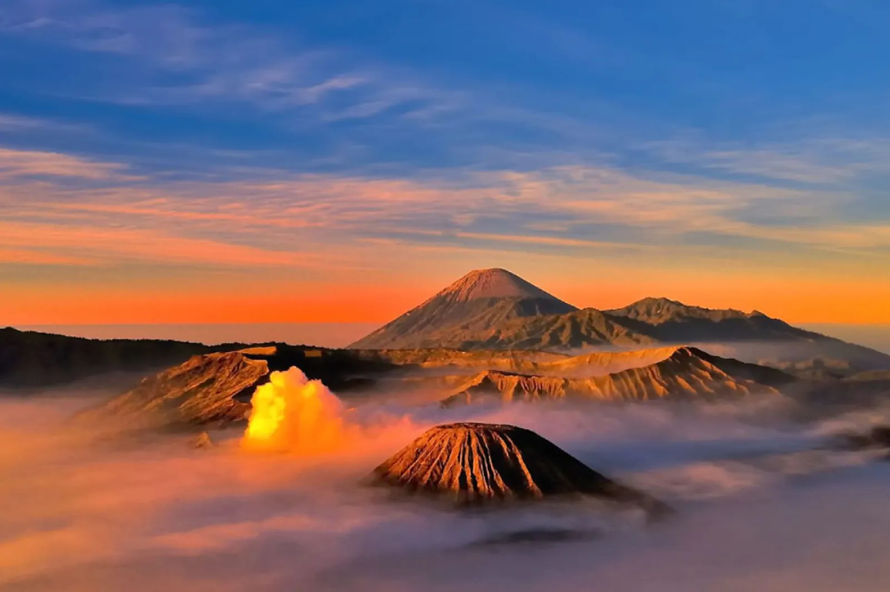
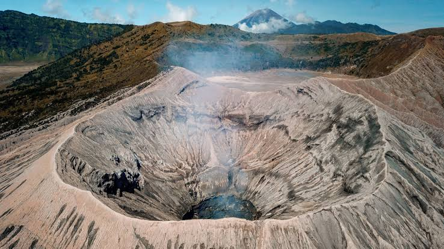

Jelajahi Keindahan Bromo

Jelajahi kemegahan hamparan pasir luas dan mistis yang dikelilingi tebing-tebing megah.

Nikmati pesona magis matahari terbit yang membelah samudra awan dari puncak tertinggi Bromo.

Rasakan sensasi menantang berdiri langsung di bibir kawah vulkanik aktif yang menderu.
"Keindahan alam bukan hanya tentang apa yang kita lihat, tetapi juga tentang apa yang kita rasakan. Di tengah luasnya langit, sejuknya udara, dan megahnya pegunungan, kita diingatkan untuk berhenti sejenak, menikmati perjalanan, dan menghargai setiap momen yang telah dilewati."-Pencinta Alam
Ayo Jelajahi Gunung Bromo!
Jelajahi sekarang dan dapatkan pengalaman petualangan terbaik.